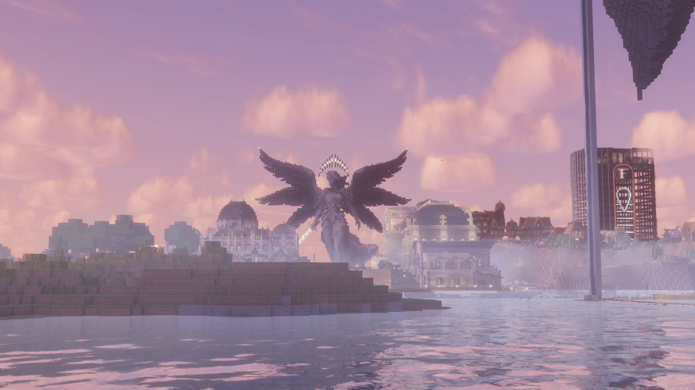

Karminéa reprend vie : le serveur rouvre ce lundi à 16h avec de nouvelles règles
Après plusieurs jours de pause, l'attente touche à sa fin. Nouveaux horaires, règlement remis à plat, cohérence des rôles rappelée — la reprise s'annonce sur de meilleures bases.

Après plusieurs jours de pause, l'attente touche à sa fin. Le staff a officiellement annoncé la réouverture du serveur ce lundi à 16h — une nouvelle que les citoyens de Karminéa attendaient avec impatience, qui s'accompagne de plusieurs changements importants à connaître avant de replonger dans l'aventure.
De nouveaux horaires pour un meilleur équilibre
La grande nouveauté de cette reprise, c'est l'instauration d'horaires encadrés. Le serveur sera désormais accessible selon le calendrier suivant :
- En semaine : ouverture de 16h à 4h du matin
- Le week-end : ouverture de 12h à 4h du matin
- Les scènes RP : uniquement de 20h à 2h du matin, tous les jours
Ces horaires ont été pensés pour retrouver un rythme plus sain. Le staff prévient que des sanctions pourront être appliquées en cas de non-respect.
Le règlement : une lecture qui s'impose
Le staff rappelle que plusieurs comportements récents frôlaient les limites du règlement. Chacun est donc invité à relire attentivement les règles avant de revenir en jeu. Les critiques envers les décisions de l'équipe restent possibles, mais doivent être constructives et mesurées.
Un point est rappelé avec fermeté : le RP sexiste ou raciste n'est absolument pas toléré. Les personnages doivent être construits de manière normale, sans s'appuyer sur des comportements blessants. Pour les joueuses qui seraient témoins d'un comportement inapproprié, il est possible d'ouvrir un ticket ou de contacter directement @Sohalia ou @myinana en message privé.
Cohérence et respect de son rôle
Le staff insiste sur un principe fondamental : il n'y a pas de personnage principal. Chacun a choisi un rôle et doit le jouer avec cohérence et honnêteté. Un civil qui tient une boutique ne peut pas adopter la mentalité d'un criminel. Accepter les conséquences de son personnage, c'est ce qui rend le jeu de rôle riche et immersif pour tout le monde.
Karminéa repart, ensemble
Cette réouverture est une chance de repartir sur de bonnes bases, dans une ambiance plus sereine et avec des règles plus claires. Le Karmine Déchaîné se réjouit du retour de la vie à Karminéa et invite chaque citoyen à aborder cette nouvelle phase avec bienveillance, respect et enthousiasme.
"Une ville qui reprend vie, c'est une ville qui choisit d'avancer ensemble."
— La Rédaction